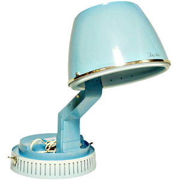
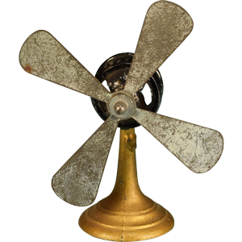

Home is many things a repository of memory, a center for family life and social activity, the focus of personal accumulation of material culture, an intensely personal place of retreat and solace, and the wellspring of personal identity. This
collection reflects the broad range of cultural, social and economic activities of the home in both urban and rural settings. It has been developed largely through donation and in partnership with communities and private collectors. The museums
interpretation of the collections focuses on community through artifacts and will continue to be a primary approach to its development, growth and focus of exhibition.
Significance to History
The strength of the Home and Community Collection lies within the home environment from early 1800’s to mid-20th-century – particularly the technologies and tools used in food preparation, cooking, storage, preservation and
cleaning, and laundry. It focuses on European and American innovation and purpose through a number of collections. Design and style play a significant role in collecting items for the museum furthering the preservation and documentation of
domestic life into the modern age.
Kitchen Appliances
Toasters
History of Toasters
During World War I, a master mechanic in a plant in Stillwater, Minnesota decided to do something about the burnt toast served in the company cafeteria. To circumvent the need for continual human attention, Charles Strite incorporated springs
and a variable timer, and filed the patent application for his pop-up toaster on May 29, 1919. He intended the device would be sold to the restaurant trade.
Electric toasters have been in existence for less than 100 years. Yet, people have been consuming bread for the past 6,000 years, and people have been toasting bread since the time of the Romans. Toasting bread makes it crunchier and preserves
it, an especially important characteristic for early civilizations. Before the advent of the electric toaster, bread was toasted over an open fire with the help of a variety of simple tools. Toasting bread does more than just preserve
it, of course, it changes its nature; bread becomes sweeter, crunchier and the perfect surface on which to spread all sorts of things.
The toaster represents the crest of one wave of technological innovation, it began with a huge effort to electrify the nation. Once homes were wired this created a demand for household appliances, one of which was the toaster.
Even after electricity was introduced to homes across America, the electric toaster was still not a feasible invention. Because the surface of toast needs to be heated to temperatures above 310 degrees Fahrenheit, electric toasters must contain
wires with the ability to reach very high temperatures without becoming damaged or starting a fire. Such a wire would have many uses, aside from application to an electric toaster. Therefore, many companies strove to discover it. By March
of 1905, an engineer named Albert Marsh discovered that an alloy of nickel and chromium, known as Nichrome, had the properties of the sought after wire.
Shortly after Marsh's discovery, an employee of the American Electric Heater Company named George Schneider applied for a patent for his version of the electric toaster. In the next several years, there were already several people and
companies working to develop their own versions of the toaster.
There must have been a number of prototype electric toasters made by companies and garage inventors alike in these early years, but it wasn't until 1909 that the first successful electric toaster was produced. In July, 1909, Frank Shailor
of General Electric submitted his patent application for the D-12, considered the first commercially successful electric toaster.
Lloyd Copeman and his wife, Hazel, were window-shopping one day in 1913 and they were looking at an electric toaster displayed in a store window. The normal way a toaster worked at the time was to place the bread on a rack facing the heated
electric coils. When the bread was toasted on one side, it was flipped by hand for the toasting of the other side. The story goes that Hazel, turned to her husband and said, “Lloyd, couldn’t you invent a toaster that
would automatically turn the toast?” There must be some truth to this as the toaster patent was issued to Hazel B. Copeman in 1914. This was the first toaster that allowed the toast to be “turned”
without touching the bread. It was called the “Automatic ” toaster. The Copeman's, both Hazel and Lloyd were issued five toaster related patents during 1914.
Many companies who wished to produce electric toasters were forced to pay royalties to Copeman or find a different way to “turn the toast”. Some swung the toast around in little baskets. Another toaster carried the bread past the heating elements
on a little conveyer belt, toasting it as it traveled along. As with the electric stove, the first Westinghouse toasters were identical in every way to the Copeman toaster other than carrying the Westinghouse name and the words “Copeman
Patents” on the nameplate.
In the decade following the invention of the toaster, toasters sparked a great deal of public interest, and a variety of toaster models were produced. During World War I, a master mechanic in a plant in Stillwater, Minnesota decided to do
something about the burnt toast served in the company cafeteria. To circumvent the need for continual human attention, Charles Strite incorporated springs and a variable timer, and filed the patent for his pop-up toaster on May 29, 1919.
He intended the device would be sold to the restaurant trade.
Charles P. Strite, born in Minneapolis, MN, received patent on October 18, 1921 for the bread-toaster. That same year Strite formed the Waters Genter Company to manufacture his toaster and market it to restaurants. Receiving financial backing
from friends, Strite oversaw production of the first one hundred hand-assembled toasters, which were shipped to the Childs restaurant chain.
In 1926, using a redesigned version of Strite's toaster, the first automatic pop-up toaster was introduced by the Waters-Genter Company, which was eventually acquired into the Edison electric empire The amazing device was called the "Toastmaster,"
and bearing a triple-loop logo inspired by its heating elements, it heralded the modern age of kitchen appliances. The name and the logo endure in the 21st century, having survived many corporate transitions to itself become the name of
the corporation. By the end of 1926 Charles Strite's Toastmaster was available to the public and was a huge success.
The next major breakthrough for the toaster came in 1928. Prior to then, the local bakery sold bread in loaves. But Otto Frederick Rohwedder, an inventor changed the history by creating the presliced-loaf and sealed-bag process. The Continental
Baking Company altered the course of bread forever in 1930 when it introduced sliced Wonder Bread. Sales were slow at first as suspicious consumers were slow to accept a pre-sliced bread, but convenience overruled apprehension and soon
everyone wanted sliced Wonder Bread on their dinner table.
By 1933, only five years after the bread slicer's introduction, American bakeries were turning out more sliced than unsliced bread. This gave a boost to another new invention: Charles Strite's spring-loaded, automatic, pop-up toaster
which had been languishing on the shelves since 1926. With Rohwedder's standardized slices on the market, Strife's invention suddenly made sense. The automatic (pop-up) toaster becomes a standard in American households.
The Charles Strite home toasters produced in 1926 are not very different from the toasters that can be found in many homes today. By the 1960's, the toaster was common enough and cheap enough that they were available to virtually every
middle class family in America. By the 1980's the slots of toasters grew, enabling bagels and wider bread to be toasted. Additionally, heat-resistant plastic and microchip controls were used in the making of the toaster, making it
even more economical and efficient than ever before.
Coffee Makers
History of the Coffee Maker
The history of the coffee maker, like many inventions, began long ago. The Turks were known to brew coffee way back in 575 A.D. and the history of the coffee maker really begins there. Much of the history of the coffee maker has been lost
to the ages, so no one really knows much about the history of the coffee maker from the time of the Turks to 1818, when the first coffee percolator was created.
But then, the history of the coffee maker really became crowded with innovation and milestones. When you say "coffee", most Americans assume you mean drip coffee. Modern drip-brewed coffee can trace it's origins to the biggin
coffee device from France. From there, another French inventor created the pumping percolator at the same time, which was to become highly popular with cowboys, pioneers and 1950s moms.
But in the glorious history of the coffee maker, there's plenty of room for other ideas. And in 1840, the Napier Vacuum Machine came along. At the time, it was complex to use but made an amazingly clear pot of coffee, which was prized
by coffee lovers. Vacuum coffee makers continue to be popular to this day, so no history of the coffee maker would be complete with its mention.
The electric coffee percolator, now eclipsed by the automatic drip coffee maker, also deserves its rightful place in the history of the coffee maker. Developed in the mid 1800s, the first electric percolators were a big hit with consumers,
as it made it easy to make pot after pot of coffee without dealing with the stove. Today's percolators, still part of the history of the coffee maker, don't look much different from the originals. Of course, the history of the
coffee maker changed forever in 1972. Mr. Coffee, the first commercially successful automatic drip coffee maker came on the scene, revolutionizing the what we drink coffee and changing the history of the coffee maker forever.
The invention of coffee filters A coffee filter which is a brewing utensil is mostly made of disposable paper filters. It is used to trap coffee grounds and allow liquid coffee to run through. A German housewife, Melitta Bentz invented the
first coffee paper filter on July 08, 1908. She really wanted to effectively eliminate the bitter taste caused by boiling loose coffee grounds or when using the common method of linen in brewing coffee. She experimented with different
means, yet ended up by using blotting papers from her son’s exercise book. When the coffee grounds free, less bitter coffee met with enthusiasm, she then decided to start a business. Melitta Bentz patented her invention
and organized a company that sells coffee filters. She hired her husband and 2 sons who became its first employees.
How Popular is Coffee
Other than oil, coffee would be likely the most precious legal commodity on earth. People around the world would roughly consume 2 billion cups each day. For every 3 people, one cup is consumed each day and this is an incredible ratio. No
wonder why there is such a huge market for coffee machines. It was in 1990s when people first demanded more appealing appliances that can complement modern kitchens, and this resulted in a new trend of redesigned coffee machines available
in a wider range of colors and styles to choose from. History and description of the different types of coffee machines
Coffee machines help make life so easy that we just cannot afford not to use them when brewing coffee. The convenience factor and caffeine boost, along with the busy schedules, prevent more people from manual brewing. There are even coffee
makers that are able to brew a cup or pot of coffee while you take your morning shower. Just imagine what our ancestors had to go through to make coffee. Here are the types of coffee makers that are mostly being used of today.
Drip Coffee Maker
This type of coffee maker debuted in America in 1972 as the popular Mr. Coffee TM and was an instant success that popularized the automatic drip brew method. In 1996, around 73 percent of American households reported using an automatic drip
coffeemaker. With automatic drip coffee machines, a measured volume of cold water is poured over into a separate chamber where a heating component heats water to near boiling. Hot water is distributed over the coffee grounds in a metal
or paper filter, through a device such as the shower head. Then water seeps through the grounds, absorbing its essences and oils, and passes through to the bottom of the coffee filter. Coffee grounds are kept in the coffee filter while
the coffee liquid drips into a coffee pot. You can choose a drip coffee maker in a 4-12 cups capacity and in different styles, colors, models and prices.
Single-Serve Coffee Maker
This type of coffee maker has gained its popularity in recent years. It is a coffee brewing method that prepares only exact or enough coffee for a single portion. Its brewing system lets a measured amount of heated water to go through the
coffee pack or pod, producing a standardized cup of brewed coffee into a container positioned under the outlet. Coffee pods are pre-packed ground coffee in their own filter. You can choose a wide range of beverages available for brewing
using single-serve coffee makers such as hot chocolate, tea and other milk based specialty beverages.
Percolator
It was in 1865 when James Nason who lived in Massachusetts patented a percolator design. Then Hanson Goorich, a farmer in Illinois was generally accredited with patenting modern percolators and it was on August 16, 1889 that his patent was
granted. Goodrich’s patent description differs little with the stovetop percolators of today. The percolator design works by heating water in a boiling pot with a detachable lid, heated water is pushed through in a metal
tube and into the brew basket that contains the coffee. Extracted liquids drain from brew basket and drip back into the coffee pot. The procedure is continuously repeated in the brewing cycle up to the point when liquid flowing repeatedly
through the coffee grounds has already sufficiently steeped. The user will judge when coffee has already reached the right color and strength by looking through the transparent knob on its lid. Then electrification came and simplified
the percolator’s operation by featuring a self-contained, heating element powered by electricity which eliminated the need for a stovetop burner. While earlier percolator design used glass construction, percolators that
are made from 1930s and above were constructed of metal, mostly with aluminum & copper.
French Press
This type of coffeemaker requires that the coffee should be a coarser grind compared to drip brew coffee filter. Finer coffee grounds will only seep through the press, then into the brewed coffee. The brewing method of a French press works
by placing coffee and water altogether, stirring it and leaving it to brew for few minutes, and then by pressing the plunger, trapping the grounds in the bottom of its beaker. Coffee purists praised the great qualities of a French press
claiming that it makes the finest coffee flavor.
Espresso Machines
The first espresso machine was patented and built by Angelo Moriondo from Turin, Italy. In 1884 when he demonstrated a sample of this machine at the General Exposition in Turin, then his patent was granted on May 16, 1884. A certificate was
awarded to him for the invention titled “New steam machine for economic & instantaneous confection of coffee beverage”. Luifi Bezzera from Milan, a mechanic, patented many improvements to this machine in 1901. It was named “The Innovations
in machinery to prepare & immediately serve coffee beverage”, granted on June 1902. Then in 1905 when the patent was bought by Pavoni Desiderio , founder of the company “La Pavoni”, started to produce the machines commercially in a
workshop in Milan, one espresso machine per day. Today, there are many drive mechanisms used in different machine designs to create espresso: Steam, Piston, Pump and Air driven, but they share some common elements: grouphead and portafilter.
Espresso machines may also feature a steaming wand that steams and froths milk for cappuccino or latte. An espresso machine works by forcing the pressurized water in near boiling to go through a puck of coffee grounds and a filter to produce
a highly concentrated coffee known as espresso.
Stoves
Early Stoves Light Up
From a cooking perspective, the ingredients of the modern kitchen came together only about 200 years ago with the first appearance of a true range—that is, a flat-topped heat source combined with an oven. Credit goes to Benjamin Thompson,
better known as Count Rumford, who designed the earliest such cooking devices to scientifically control heat as early as the 1790s. Rumford was an engineering pioneer who made the first scientific studies of heat transfer while perfecting
methods for boring cannons. Better known today as the inventor of the Thermos Bottle and the fireplace that bears his name, Rumford’s particular genius in the kitchen was to take the cooking fire out of the open hearth
and put it in a box.
A kitchen equipped according to Rumford’s ideas was dominated by a large range built of brick masonry. Though sometimes connected to the chimney mass, such ranges might also be given their own space. The breakthrough idea was
a flat top perforated by round ports of different sizes that opened to the fire below, into which the cook would lower Rumford-designed pots and pans, similar to the operation of some institutional ranges of today. Cast iron seems to have
appeared in later versions for tops and firebox doors, and the same kitchen might also include another Rumford innovation: an iron drum with a door that was built into the hearth masonry and called the Rumford Roaster.
The growth of American coal and iron mining in the 1820s made cast iron the wonder material of the 19th century and led to a prolific industry in making stoves for cooking as well as heating. Cast iron could take the repeated temperature swings
of hot and cold, and it was an ideal medium for casting into complex, prefabricated parts, as well as for decorative surface ornament. Early metal stoves imported in large numbers from Holland and England came in a variety of boxy designs,
but by the 1840s a number of basic stove types—used for laundry, heating, and cooking—had been worked out and were being manufactured widely in America.
Whatever their use, early stoves were designed to burn wood, but after the Civil War, coal-burning designs came on the scene. While stoves made for cooking as well as heating might be retrofitted to exhaust out an existing hearth and flue,
in the best situations they were connected by an umbilical metal stove pipe to a new kind of chimney that was smaller in flue diameter to enhance the draw for the stove. In pre-1830s houses, where there might be only a large central chimney
and open cooking hearth, whole new kitchen ells were often built just to accommodate the radically different range.
The Promise of New Fuels
As the Age of Invention waxed in the 1880s and ’90s, stove manufacturers began a search for heat sources beyond wood and coal, and an unlikely combination of forces led them to gas. Always pioneers in the use of gas, English
inventors had been experimenting with cooking by gas as early as the 1830s, but it took the maturing of the gas lighting industry to extend the notion to cooking in America. In the 19th century, gas was made from bituminous coal and was
primarily an illuminant used to power street and indoor lights. Though gas cooking had found a place in England by the 1860s, and range manufacturers were beginning to ship their product overseas, in America gas was considered too expensive
a fuel to be burned for cooking (not to mention the source of an after-taste in some minds).
After 1900, though, gas companies were seeing electric power companies nibble away at their bread-and-butter business —lighting—so they turned to the kitchen as the source of a new market. Since gas ranges had no need for the heavy,
cast iron box of a wood- or coal-burning range, they could be built in much lighter and more compact forms. Plus gas ranges gave off much less excess heat and had no need for a chimney, making them ideal for the new, smaller kitchens of
houses like bungalows. What’s more, they were light enough to stand on tall, slender legs to become, along with sinks, one of several pieces of freestanding furniture in the early modern kitchen.
By the 1910s the design of a gas cook stove had arrived at the iconic look of the cabinet range—a burner top at left or right of a baking oven with a broiler below. Ranges were usually constructed of sheet metal and cast iron with a
baked enamel finish. Gas fed the burners through an exposed manifold running across the front that was controlled by wheel handle valves or utilitarian cocks. By the Roaring Twenties, the cabinet range hit its stride as a five-burner,
two-oven appliance. A popular sales hook was porcelain enameling of all surfaces in black, white, or grey, but the big breakthrough was the invention of reliable heat regulators for controlled oven temperatures.
Gas was not the only fuel innovation, however. The vapor stove, common by the 1890s, capitalized on the new availability of petroleum products in areas where piped-in gas was not available. Also made of iron and sheet steel, these stoves were
light and portable with a styling not unlike the treadle sewing machines of the day. In the 1910s and ’20s, the combination range became quite the rage. These cookers were fired by gas as well as wood or coal, and offered
seasonal versatility: coal or wood for added winter warmth, or just gas for cooking in summer heat. In another tug of war, electric appliance manufacturers made their own leap into the cooker market with electric ranges. What started as
a glorified electric hot plate around 1917 had gained new ground by 1930 as the electric ranges, looking much like the products of their gas competitors, fed the appetite of a nation pushing to wire for power.
Sizzling in Many Styles
In the early 1930s, gas range manufacturers found a way to hide the gas manifold behind the sheet metal body, and cookers on spindly cabriole legs quickly assumed a new marketing persona as the chest of drawers range. Covers that pulled down
over the burner left the appliance hardly recognizable as a stove, according to ads. In the tight times of the Depression, some manufacturers suggested their ranges might even double as tables. Drawer-type handles and decorative legs continued
the notion that ranges were furniture—even down to paint finishes that aped materials like marble or wood.
By the end of the decade, the built-in look had arrived, and gas and electric ranges alike suddenly stopped trying to masquerade as freestanding cabinets. The winds of streamline design were blowing through the kitchen, so ranges grew dashboard-like
backs that hugged the wall and square-cut corners that fit flush with countertops at either side. Legs became greatly reduced or disappeared altogether. Inspired by the new aerodynamic contours of planes, cars, and trains, designers were
adding airfoil curves and chrome speed lines to the most stationary of kitchen appliances. The trend continued through the 1940s and into the post-war years, when ranges became blessed with as many timers, automatic controls, and gadgets
as the new automobile-driven economy could connive—a fitting domestic food preparation station for the atomic-era lifestyle to come.
Refrigerators
History of the Refrigerator
Ice was the principle means of refrigeration until the late 19th century. In the United States and Australia non-mechanical refrigerators, known as iceboxes or icechests, were used to keep perishable food fresh. Iceboxes continued to be used
as the primary source of refrigeration for many families into the mid 20th century. Figures from the United States show that in 1923 iceboxes outsold mechanical refrigerators but that by 1944 refrigerators were outselling iceboxes by more
than two to one. (Iereley 1999, p.246) Figures for Australia are less comprehensive: a survey of appliance purchases in 1923 does not include refrigerators.
By 1955, refrigerators were recorded: 77% of all homes in Brisbane, 83% in Sydney, and 67% in Melbourne owned refrigerators. By 1964, it was estimated that 94% of all Australian households owned a refrigerator (Dingle 1998, p. 124). These
figures are supported by recorded oral histories, which demonstrate that in Australia many families were still using iceboxes in the late 1940s and 1950s. (Coleman; The-real-keneth-williams-story; Narrative 708).
Iceboxes
An article in the New York Mirror from 1838 provides a clear definition of the standard icebox: it 'is a double box, the outside of mahogany or other wood, and the inside of sheet-zinc [or tin], the space between being three or four inches.
By filling this space with finely powdered charcoal, well packed together, the box is rendered almost heat-proof, so that a lump of ice weighing five or six pounds may be kept twenty-four to thirty-six hours, even more, if the box is not
opened too often, so as to admit the hot air from without. Of course while it is closed the air contained within it, being in contact with the ice, is reduced to nearly the same temperature; and meat is preserved perfectly sweet and good,
the same as in winter. The interior of the refrigerator is provided with shelves for the reception of dishes, bottles, pitchers, etc.; and thus, by very simple contrivance, joints of meat are kept good for several days, wine is cooled,
butter hardened, milk saved from 'turning', and a supply of ice kept on hand for the more direct use of the table.' (Quote in Ierley 1999, p. 168) The means of insulation described above was not standardised; fur pelt, hair,
cork, wool, felt, ash and later asbestos were all used as insulating materials. The placement of the ice was also not standardised, though by the end of the nineteenth century it was generally placed in a tray at the top of the unit. A
pipe for melted water ran from the ice tray to a drip tray underneath the icebox. This configuration allowed for air to circulate, enhancing the cooling effect - 'the denser cool air descending to the bottom and displacing the lighter
warmer air, which rose to the top.' (Ierley 1999, p. 169)
Refirgerators
Domestic refrigeration was a by-product of the desire to create ice commercially and a growing interest in shipping fresh produce overseas. 'Climate and distance forced Australians to be innovative in refrigeration.' (AATSE 1988,
p. 95) Though other countries had successfully lowered temperatures mechanically by the mid 19th century, it was Australians who developed the mechanical means to manufacture ice, the precursor to modern refrigeration. In Geelong in 1851,
James Harrison, using an ether compression machine, succeeded in his quest to manufacture ice on a commercial scale. He patented his process and apparatus in 1856; however the venture was not a commercial success. Eugene Dominique Nicolle
was another inventor based in Australia who experimented with mechanical refrigeration. In 1861 and 1863 he took out patents for an ice making machine that relied on the ammonia absorption process. In 1867 Nicolle 'advertised a domestic
refrigerator which was an icebox of improved design and in the seventies … he marketed a small household refrigerator based on the principle of the heat of solution of solutes.' (Farrer 1980, p. 197) Patents for air expansion
machines were also taken out by B.G. Sloper in 1858 and J. Davey Postle in the late 1860s. American designs eventually came to dominate the refrigeration market.
A shortage of natural ice in 1890 provided an impetus to experiment with mechanical means of making ice which ultimately resulted in the creation of domestic refrigerators. The first domestic refrigerator sold in America was a manually operated
machine produced by Mr J.M. Larsen in 1913. In 1918 the first automatic, mechanical refrigerators were sold; sixty seven of these refrigerators, made by Kelvinator and engineered by E.J. Copeland, were sold in this year. In 1926, the General
Electric Monitor Top came onto the market 'after eleven years of experimenting'. (Althouse 1952, p. 2) By 1940 the North American market was dominated by four manufacturers: General Electric, Westinghouse, Kelvinator, and Frigidaire.
(Cowan 1983, p. 139).
In Britain the first refrigerator was sold in 1921; it was a French compressor design. Frigidaire was manufacturing in Britain by 1923. In Australia, the first domestically designed and manufactured refrigerators were made by Sir Edward Hallstrom.
In the 1920s they used kerosene as their power source, but in 1935 Hallstrom introduced the 'Silent Night' which ran on electricity or gas. The Silent Night was cheap to buy but incredibly expensive to run. As recorded in one
oral history, 'operating costs were so astronomical that Sir Edward came to an arrangement with the Electricity supply people. He subsidised the electricity accounts of people buying and operating his refrigerator.' (the-real-kenneth-williams-story).
Other Australian manufacturers gradually entered the refrigerator market including A.G. Healing in the late 1930s; Charles Hope, Colda, and Kirby (an Australian company with licensing agreements with two American refrigeration companies, Crosley
and Tecumseh) in the mid 1940s. Some American manufacturers established plants in Australia to manufacture domestically: for example General Motors (in 1926), Kelvinator and Westinghouse.
In 1920, a domestic refrigerator in America cost on average $600. At the height of the depression, 1929, refrigerators cost on average $292, and by 1940 were as little as $154. The fall in prices reflected an increase in production levels:
10,000 units in 1920; 840,000 in 1929; and 2,720,000 in 1940. (ASRE 1943, p. 341) This level of production met export as well as domestic markets; in 1936-37 the USA exported around 200,000 domestic refrigerators. The growth in refrigerator
manufacturing and consumer demand was the result of aggressive marketing campaigns. In 1923 the industry spent $45,000 on advertising; in 1931 it spent $20 million. The advertising message was one that assumed purchase; it did not dwell
on the superiority of refrigerators over iceboxes, rather it explained how families could afford refrigerators, which model suited their needs best, and how to use it once purchased. Thus household ownership of refrigerators in the United
States went from 10% in 1930 to 56% in 1940. By 1960 the percentage was up to 80 in the USA; in Australia it was up to 90%. (Strasser 1982: 265-267; Cowan 1983: 196).
Early mechanical refrigerators used ammonia, methyl chloride or sulphur dioxide as refrigerants, all highly toxic gases. A series of fatal accidents in both the home and work place in the 1920s - from leaking refrigerants - encouraged researchers
at General Motors and Du Pont to explore alternative refrigerants. Thomas Midgely, an engineer at General Motor's Frigidaire division, developed the gas Chlorofluorocarbon (CFC) in the late 1920s. CFCs were extremely stable, chemically
inert, non-toxic, and non-flammable. Produced by DuPont under the brand name Freon, they were the miracle chemical of their time and were used by all refrigerator manufacturers until the early 1980s when the devastating effect they had
upon the Ozone layer was brought to public attention. A suitable non toxic, environmentally friendly, replacement to CFCs is still being researched. In the interim, hydrofluorocarbons are used as refrigerants.
By the 1930s, refrigerator design focused upon aesthetic and functionality. Users by now assumed that the refrigerator would operate satisfactorily. Issues that became important to the consumer were 'increased food storage volume, reduced
energy consumption, greater cooling capacity, lower cost, lower noise level and improved appearance.' (ASRE 1943, p. 341) Early refrigerators resembled iceboxes, with wooden bodies and simple interiors. By the 1930s refrigerators
were constructed of enamelled metal and reflected contemporary stylistic trends. Interiors were designed with convenience and use in mind. In 1933 Crosley patented the first door shelves; by the early 1940s most refrigerators had freezer
compartments with mechanical release ice trays, butter compartments which maintained a slightly higher temperature to keep butter spreadable, rustproof shelving, left or right hand opening doors, utility shelves for bottles, meat trays
and vegetable drawers. (Ierely 1999, p. 246).
The development of affordable, mass produced whitegoods was to impact upon the design of household kitchens. In the post World War II period, 'the major components of the kitchen - the range, the refrigerator and the sink … - were
designed to be placed one next to the other.' (Ierley 1999, p. 247) In 1945, this concept was developed further as manufacturers set standard dimensions for kitchen units and appliances. The development of new materials (eg. Laminex
and Formica) and paint colours were also employed in kitchen design, so that by the mid 19th century refrigerators came in a variety of fashionable colours; the Frigidaire range by General Motors lead this trend.
Bathroom Appliances
Hair Dryers

History of Hair Dryers
Hair Dryers, are hot hair tools which are a key component of the hair care and hair styling industry. Hair Dryers are any type of tool which contains any type of blower which dries hair. Utilizing this idea, a fan, a hand dryer or a variety
of other blowers could actually be considered a hair dryer.
Invention of The Hair Dryer
The vacuum cleaner was the initial inspiration for the creation of the hairdryer in use today. Before hair dryers were in existence, men and women commonly dried their hair using vacuum cleaner hoses.
The original vacuum cleaner was invented in 1890 by Alexandre Goldefroy for use in his French hair salon. Goldefroy’s hair dryer was an unsophisticated version of what’s available in modern times.
The Goldefroy hair dryer was rigged up so that a man or woman could sit underneath it. It was not portable in any way and it was not handheld.
1920s Introduction Of Handheld Hand Dryers
In 1920 the US Racine Universal Motor Company as well as the Hamilton Beach Company created handheld hand dryers, eventually referred to as blow dryers, which were released to the professional and consumer hair market. Although a step in the
right direction, the new portable hairdryers were heavy and challenging to use. In fact, the hair dryers could weigh up to 2 pounds. Obviously they could be exhausting to use when drying a lot of hair.
The 1920s version of the portable hair dryers, now known as blow dryers, could potentially overheat or cause electrocution. The new hand held hair dryers were only capable of using 100 watts of heat instead of the 2000 watts currently available.
With the limits on heat wattage, it took a lot longer to dry the hair.
Hair Dryer Evolution
From those first hair dryers released in 1920 the hair dryer has gone through many evolutions. Although the basic function and mechanism of the hairdryer has not experienced any significant changes since its invention the features have evolved
dramatically.
Besides the hand held dryers other major types of blow dryers which were developed included the soft bonnet hairdryer and a rigid-hood style hairdryer.
A soft bonnet style hairdryer was introduced to hair consumers in 1951 which consisted of the traditional motor with hose attachments not unlike vacuum cleaners. The 50s also saw the introduction of the rigid-hood hair dryer which is the type
most frequently seen in salons. The rigid-hood dryer had a hard plastic helmet that goes over the head. This rigid-hood dryer works similarly to the bonnet hairdryer, but at a much higher wattage.
An important change to the hand held hair dryer occurred in 1954 when GEC changed the design of the dryer to move the motor inside the casing.
Another key change occurred in the 1960s with the weight of the blow dryer. Better electrical motors were introduced at that time along with the lighter plastics. In the 1970s the Consumer Product Safety Commission (CPSC) set up hairdryer
safety guidelines which addressed past issues with electrocution or overheating.
CPSC Safety Measures
Since 1991 the CPSC has mandated by US law that all dryers must use a ground fault circuit interrupter so that it cannot electrocute a person if it gets wet. By 2000 deaths by blow dryers has dropped to less than four people a year. This is
a drastic change from the hundreds of electrocution cases which occurred in the past.
Not only has the appearance of the hairdryer changed dramatically since those early vacuum cleaner tube days, they now are equipped with a dizzying array of options and features ranging from noise reduction and wattage options to a variety
of attachments (concentrators, diffusers, attached combs and brushes) to heat settings and dryer speeds.
One way that manufacturers of hair dryers utilize to stand out for consumers is the type of features they offer on each of their different models.
Fans

History of Fans
Pictorial records showing some of the earliest fans date from around 3000 BC and there is evidence that the Greeks, Etruscans and Romans all used fans as cooling and ceremonial devices, while Chinese literary sources associate the fan with
ancient mythical and historical characters. Early fans were all of the fixed type, and the folding fan does not appear either in the East or the West until relatively late in its history.
The first European folding fans were inspired by and copied from prototypes brought in to Europe by merchant traders and the religious orders who had set up colonies along the coasts of China and even Japan. These early fans were reserved
for Royalty and the nobility and, as expensive toys, they were regarded as a status symbol. While their montures (i.e. sticks and guards) were made from materials such as ivory, mother of pearl and tortoiseshell, often carved and pierced
and ornamented with silver, gold and precious stones, the leaves were well painted by craftsmen who gradually amalgamated into guilds such as The Worshipful Company of Fan Makers.
Along with the times, the development of the fan is also a very popular fashion commodity in the 16th century-18. but, there has been a shift in the function of the fan in the early 20th century. At that time, the fan is no longer as a fashion
accessory, but be as a means of advertising. Meanwhile, in the country of Spain itself become a tool fan to cool the air, because in Spain has a climate that is hot enough.
With the rapid advancement of technology, comes the electric fan. Electric fan was first discovered by Schuyler Skaats Wheeler, in 1882. Wheeler was first demonstrated electric fan with two propellers, without any protective and driven by
an electric motor power. Continued development of the electric fan and was developed by Philip H. Diehl, who Patented in 1887. At the time, Diehl introduced the fan attached to the ceiling.
The electric fan was one of the most important electric inventions of all time. The fan is a building block of other more advanced technologies. Fans are necessary in computers, lasers, large LED lights, petrol and electric automobiles, the
space station and countless other things. The fan as used in HVAC systems allows humans to build giant or underground buildings. It would be hard to imagine a world without the electric fan!
The electric fan has blades similar to a water or steam turbine. A DC or AC motor drives a rotating shaft. Sizes of fans have gotten much smaller and lighter over the years. As engineers improved the electric motor and blade design they figured
out how to get more performance out of a design.
The first electric fan was made in 1886 by Schuyler Wheeler. Early fans were all DC powered. After the 1890s fans with AC motors were produced. In the late 1920s GE released a design which had overlapping blades, which made fans much more
quiet. As the decades passed other materials like nylon and wood were used in the designs. There were more variations in color and style after the 20s as well, before this fans only came in black. In the 1950s air conditioning gradually
replaced table fans.
Electric Fans are a vital part of computers as they not only blow cool air into cabinets where microchips are but they can come in small sizes to cool individual chips. Powerful LED lamps require fans to cool the electronics that uses less
copper and steel.
Laundry Appliances
Washing Machines
History of Washing Machines
For centuries, people on sea voyages washed their clothes by placing the dirty laundry in a strong cloth bag, and tossing it overboard, letting the ship drag the bag for hours. The principle was sound: forcing water through clothes to remove
dirt. Catharine Beecher, an early advocate of bringing order and dignity to housework, called laundry "the American housekeeper’s hardest problem". Women from all classes tried to find ways to get relief from
doing laundry. Some hired washerwomen and others used commercial laundries. Eventually mechanical aids lightened the load.
"In the early days, without running water, gas, or electricity even the most simplified hand-laundry used staggering amounts of time and labor. One wash, one boiling and one rinse used about fifty gallons of water—or four hundred
pounds—which had to be moved from pump or well or faucet to stove and tub, in buckets and wash boilers that might weigh as much as forty or fifty pounds. Rubbing, wringing, and lifting water-laden clothes and linens, including large
articles like sheets, tablecloths, and men’s heavy work clothes, wearied women’s arms and wrists and exposed them to caustic substances.
They lugged weighty tubs and baskets full of wet laundry outside, picked up an article, hung it on the line, and returned to take it all down; they ironed by heating several irons on the stove and alternating them as they cooled, never straying
far from the hot stove."
The First Washing Machines
The earliest manual washing machines imitated the motion of the human hand on the washboard, by using a lever to move one curved surface over another and rubbing clothes between two ribbed surfaces. This type of washer was first patented in
the United States in 1846 and survived as late as 1927 in the Montgomery Ward catalogue. The first electric clothes washers, in which a motor rotated the tub, were introduced into America about 1900. The motor was not protected beneath
the machine and water often dripped into it causing short-circuits and jolting shocks. By 1911, it was possible to buy oscillating, cylinder, domestic washing machines with sheet metal tubs mounted on angle-iron frames with perforated
metal or wooden slat cylinders inside.
Manufacturing Challenges
From a technological perspective, washing machine manufacturers faced a number of challenges. These included discovering a method of transferring power from the motor to the mechanism, finding a suitable motor with sufficient initial starting
torque, and ensuring that the operator did not get an electrical shock during operation.
In the transference of power, some washing machines were chain driven, some belt driven and others used shafts and gears. To overcome the initial resistance in starting a washing machine, a fractional horsepower motor, which would not burn
out or overheat during the start-up period was used. This was usually a ⅛ or ¼ horsepower motor, manufactured out-of-house by Westinghouse or Robbins and Myers. To prevent electric shocks, the stator and rotor of the machine
were enclosed in a housing equipped with a fan to prevent overheating.
Improvements
From the customer satisfaction perspective, a machine that would wash without shredding the clothes needed to be developed. This meant that if the original scrubbing machines were used, the machine had to be operated at different speeds for
different textiles. To overcome the problem, washing machines that sloshed water through the clothing by agitation were developed. Either the tub moved or a baffle placed inside the tub moved.
Early washing machines had a heavy, dirty, cast-iron mechanism mounted on the inside of the tub lid. The introduction of a metal tub and reduction gears to replace this bulky apparatus was a great improvement. By 1920, the coopered wooden
tub was no longer being manufactured. Beatty Brothers of Fergus, Ontario was the first company to produce an agitator washing machine. The early Beatty machines had ribbed copper tubs which were nickel or nickel-chromium plated. In the
US, the first firm to adopt agitator technology was Maytag. The vertical orientation of these machines became the industry standard replacing the horizontal rotating axis of earlier machines.
Starting in the 1920s, white enamelled sheet metal replaced the copper tub and angle-iron legs. By the early 1940s, enamelled steel was used and sold as being more sanitary, easier to clean and longer lasting than the other finishes. The sheet-metal
skirt was also designed to extend below the level of the motor mount.
In the early 1920s, a number of Canadian machines were offered with built-in gas or electric water heaters. By the 1930s, domestic water heaters were in many homes and the washing machine heater was of little use. The addition of a motor-driven
drain pump at this time moved the machine one step closer to complete automaticity.
The next development of the washing machine was the fitting of a clock timing device which allowed the machine to be set to operate for a pre-determined length of wash cycle. Now, the operator no longer needed to constantly monitor its action.
By the early 1950s, many American manufacturers were supplying machines with a spin-dry feature to replace the wringer which removed buttons, and caused accidents involving hair and hands. In 1957, GE introduced a washing machine equipped
with 5 push buttons to control wash temperature, rinse temperature, agitation speed and spin speed.
Dryers
History of Dryers
If you ask about some of the most essential home appliances, you know that dryers would be part of that list. The convenience of having your clothes dried just after washing them is something that one can really get used to. Because of the
availability and accessibility of these appliances, clotheslines and clothes pins have become a thing of the past for most of us. Why wait for the sun to dry your clothes when you have a dryer handy at home?
Dryers also go way back, as long as washers have been. The interesting thing is that the basic concept of clothes-drying has been the same until now. You have a drum with ventilation holes for the clothes to be dried with from a heat source.
Though made more effective and efficient today due to advances in technology, the foundational design of the dryer has not undergone much changes throughout the years.
1800s
As far as records go, the first dryer was created during this period. Credit goes to M. Pochon from France. The first models of the dryers were also called "ventilators." The first dryers featured a metal drum with vents on them,
and were placed over a fire to have the clothes dried. The machine has a crank that one has to turn manually, pretty much like a rotisserie.
The idea seemed right and simple. The only problem was, as you can gather, the clothes would end up smelling like smoke. And that was the least of your concern. Other concerns were that the clothes would get sooty, which would make washing
the clothes in the first place pretty much pointless; and that there were times that the clothes would catch fire and eventually burn. It was a nice idea, but the execution of the idea would need some more work.
1892
In this year, the first patent for a dryer was given to George T. Simpson. There were several improvements that can be seen on Simpson's model. It featured a rack for the clothes, and the heat source was from a stove, rather than from
an open fire. That took care of some of the difficulties presented by the previous model of the dryer. The patent for his invention was dated June 7, 1982.
1915
Electric dryers were available to the market at this time. The only problem was that the prices of such appliances at the time were prohibitive. You need to pay a lot of money to enjoy the advantage of having an electric dryer.
1938
The Hamilton Manufacturing Company started selling automatic clothes dryers from the invention of J. Ross Moore. Moore developed a dryer model that has the drum shape that we're all familiar with today. Moore also made gas and electricity-powered
models. On its debut, the model was marketed under the name "June Day."
1940s
This period saw the rise in sales for electric dryers. During these times, the dryer has become more affordable and practical. You can attribute this to the competition between brands in the dryer market, and also the growing need of many
households for dryers.
1946
This year saw some very good additions to the clothes dryer. Dryers during this time came out with controls moved to the front, the inclusion of a timer, the addition of an exhaust for moisture from the drying process, a cool-down cycle, and
temperature controls. One can say that as early as this year, you could find the beginnings of the features of the dryers that we see today.
1958
This is the year that the negative pressure dryer debuted. Aside from that, the dimension of most models was 30-inch wide, so it can handle a pretty big load of laundry.
1959
This year saw the introduction of the dryness sensor. What this sensor does is turn off the dryer once the clothes in the tub are determined to be dry. This feature saved people a lot of time and money in terms of energy bills.
1965
On this year, dryer models with permanent press cycles were made available to the buying public.
1972
From this point forward, electric starters could be found on gas-powered dryers. Pretty much, people were using the dryer as some kind of oven.
1974
The feature added to dryers during this period were microelectronic controllers. These were meant to time and control drying cycles. Aside from the convenience, it also made for savings on energy bills.
1983
Delayed starters for dryers first came out during this period. Delayed start timers are useful features for people who live in areas where the electricity and energy rates are cheaper during the nighttime or off-peak hours. This feature also
allowed people to save on their energy bills.
Present Dryers
During present times, the main drive for dryers is to be energy-efficient appliances. If it can do the job with less energy consumption, the better. There have been several manufacturers aiming for this ideal, not just because of government
standards, but also because the market is heading toward buying "greener" machines. Aside from the environmental virtues, it also means more savings for the consumer, that's why people are opting to buy more green washers
and dryers.
For present models, one can also find digital displays and LCD touchscreens for the controls. Added to those are the attention to detail when it comes to dryer settings. Since machine drying can damage and shrink fabric, you can now find several
settings that are meant to diminish fabric damage during the drying process. With just a push of a button, the dryer will automatically set the drying time, temperature, and speed to take care of the fabric.
Another useful feature that you can find in modern models are the noise and vibration reduction features. As the names suggest, these added features allow for quieter dryer operation. You can also find that some dryers have self-adjusting
suspension systems to prevent excessive shaking and maintain dryer stability. These features are attractive for people who live in apartments and condos.
Flat Irons
History of Flat Irons
Blacksmiths started forging simple flat irons in the late Middle Ages. Plain metal irons were heated by a fire or on a stove. Some were made of stone, like these soapstone irons from Italy. Earthenware and terracotta were also used, from the
Middle East to France and the Netherlands.
Flat irons were also called sad irons or smoothing irons. Metal handles had to be gripped in a pad or thick rag. Some irons had cool wooden handles and in 1870 a detachable handle was patented in the US. This stayed cool while the metal bases
were heated and the idea was widely imitated. (See these irons from Central Europe.) Cool handles stayed even cooler in "asbestos sad irons". The sad in sad iron (or sadiron) is an old word for solid, and in some contexts this
name suggests something bigger and heavier than a flat iron. Goose or tailor's goose was another iron name, and this came from the goose-neck curve in some handles. In Scotland people spoke of gusing (goosing) irons.
You'd need at least two irons on the go together for an effective system: one in use, and one re-heating. Large households with servants had a special ironing-stove for this purpose. Some were fitted with slots for several irons, and
a water-jug on top.
At home, ironing traditional fabrics without the benefit of electricity was a hot, arduous job. Irons had to be kept immaculately clean, sand-papered and polished. They must be kept away from burning fuel, and be regularly but lightly greased
to avoid rusting. Beeswax prevented irons sticking to starched cloth. Constant care was needed over temperature. Experience would help decide when the iron was hot enough, but not so hot that it would scorch the cloth. A well-known test
was spitting on the hot metal, but Charles Dickens describes someone with a more genteel technique in The Old Curiosity Shop. She held "the iron at an alarmingly short distance from her cheek, to test its temperature..."
The same straightforward "press with hot metal" technique can be seen in Egypt where a few traditional "ironing men" (makwagi) still use long, heavy pieces of iron, pressed across the cloth with their feet. Berber people
in Algeria traditionally use heated metal ovals on long handles, called fers kabyles (Kabyle irons) in France, where they were adopted for intricate ironing tasks.
Box Irons
If you make the base of your iron into a container you can put glowing coals inside it and keep it hot a bit longer. This is a charcoal iron, and the photograph (right) shows one being used in India, where it's not unusual to have your
ironing done by a "press wallah" at a stall with a brazier nearby. Notice the hinged lid and the air holes to allow the charcoal to keep smoldering. These are sometimes called ironing boxes, or charcoal box irons, and may come
with their own stand.
For centuries charcoal irons have been used in many different countries. When they have a funnel to keep smoky smells away from the cloth, they may be called chimney irons. Antique charcoal irons are attractive to many collectors, while modern
charcoal irons are manufactured in Asia and also used in much of Africa. Some of these are sold to Westerners as reproductions or replica "antiques".
Some irons were shallower boxes and had fitted "slugs" or "heaters" - slabs of metal - which were heated in the fire and inserted into the base instead of charcoal. It was easier to keep the ironing surface spotlessly clean,
away from the fuel, than with flatirons or charcoal irons. Brick inserts could be used for a longer-lasting, less intense heat. These are box or slug irons, once known as ironing boxes too. In some countries they are called ox-tongue irons
after a particular shape of insert.
Late 19th century iron designs experimented with heat-retaining fillings. Designs of this period became more and more ingenious and complicated, with reversible bases, gas jets and other innovations. See some inventive US models here. By 1900
there were electric irons in use on both sides of the Atlantic.
The search for a foolproof "self-heating flat iron" was under way by the mid-19th century. In 1852 a patent was issued in the US for a new, improved charcoal-burning iron which would make "practicable the permanent heating of
smoothing irons". By 1860 there were gas irons available in several countries, with rubber tubing to connect them to gas light fittings or to canisters, and then there were numerous designs for irons with internal burners and little
piggyback tanks of liquid fuel.
Any inventor who had ever been near the room where ironing was done knew it was a hot, tiring job. Whatever the weather, the housewife/laundress would work beside a hot stove or hearth, with at least two irons, probably three, moving them
from stove to ironing table and back again in a cycle of heating, pressing and re-heating. Meanwhile she must keep the irons spotlessly clean with no trace of ash to soil the clean linen.
As we now know, the electric iron solved these problems better than any other self-heating apparatus, while charcoal-filled irons remain popular today in many less-electrified parts of the world. By the early 1880s more than one person had
considered powering ironing with electricity, but Henry W. Seely of New York was the first inventor to make this idea workable and patent it too. Seely developed a design in 1881, got a patent in 1882, and then worked with his partner,
Dyer, to patent a different "electric flat iron" in 1883.
Seely and Dyer had doubts about having the iron continuously plugged in, as "connecting [it] permanently with the circuit [...] may be inconvenient in some cases". They invented a sort of "cordless" iron, on a stand heated
by electricity. (Lower picture left) This echoed developments in using gas for ironing, where gas-fed iron-heaters or ironing-stoves were serious rivals to irons on lengths of rubber tubing.
Uncertain claims that there was an even earlier electric iron in France seem to be connected with two different dates given to an early French iron in London's Science Museum. However, this French museum expert is skeptical about such
claims.
By the early 20th century enthusiasm was building for the new electric smoothing irons: clean, powerful, adjustable, and labour-saving.
They didn't make you roasting hot, and they didn't carry soot or ash. As the advertisement says, they were better than three flat irons. And yet, there were still plenty of traditionalists who stuck with flat irons (aka sad irons)
well into the middle of the 20th century, even when they lived in a home with a good electricity supply.
The Hotpoint iron, designed by Earl H. Richardson of Ontario, California, was launched in 1905, and was the first electric iron to have any commercial success. By the 1920s enough people had homes wired for electricity for electric clothes
irons to spread fast across the US. They were also selling well in some parts of Europe. By 1932 17.5 percent of Swiss homes had one, more than in the US, according to Iván Berend in An Economic History of Twentieth-Century Europe.
The Waage ad (above right) for an iron with hot, medium, and low settings, appeared in the 1920s. By the 1930s the iron's only rival for "most popular electrical home appliance" was the radio. In 1941 79 per cent of American
households had an electric iron, according to the Monthly Labor Review for December 1945.
1951 High Pop Automatic Toaster
A brand new Kenmore development with unexcelled toasting performance. Perfect toast every time, whether you make just one slice or two. And the exact browning you select--light, golden or dark brown. Every slice alike. No progressive darkening.
New quiet cushioned pop-up, too! Toast pops up high for easy reach. Even small slices can be removed without burning fingers. No ticking. It's silent. Should you forget to set browning control (or if you're in doubt) just flip
the inspection knob... toast pops up for a quick look. To continue toasting, push lever down. Fine for dry or raisin bread. Mirror-finish chrome-plated. Hinged crumb tray. Brown plastic handles.
1975 Combo Toaster and Mini-Oven
You get a two-slice pop-up toaster and a multi-purpose mini-oven that heats to full baking temperature... both in a cabinet not much bigger than a four-slice toaster. Oven is 9 3/4 inches wide; 5 1/4 inches deep and 2 1/2 inches high inside.
Has four heating elements. Dual brownness controls for precise color control on toast.. and for heating frozen, refrigerated or non-refrigerated toaster pastries and convenience foods. Tempered glass door. Horizontal grille extends when
door opens for easy access to food.
1920s Toast in a Drawer
This toaster came out in the late 1920s, a few years after the famed Toastmaster Automatic Pop-up Toaster hit the market in 1926 and was a huge success. This being America, competition for a share of the market was fierce among manufacturers
of small electric appliances. An automatic toaster was a new-fangled thing.
The shape is architectural and the decoration is in the Lafayette pattern . Every detail is finished and decorated including the fasteners for the feet decorated with rosettes. This toaster was from one of a whole line of small appliances.
The styling is startlingly different from the Toastmaster with its louvered sides, but it is alike in two ways: it toasts one slice at a time, and it uses a clockworks mechanism for timing. To make toast, first you plug in the cord and the
current starts immediately to heating panels; you have to let it warm up for a minute or two.
Early Toaster with Rack Mounted On Top
Electric toasters had been around for less than a generation when this electric toaster was made in New Britain, Connecticut, by a company known for its high quality cutlery, hotel and hospital ware, and really beautiful early electric appliances.
The detachable cord plugs into the center of the base. The two doors are spring-loaded to clamp the bread against the guide wires and efficiently close to the heat to toast one side of each slice. Then you have to open the door, flip the slice
to the other side and finish the toasting. This toaster has the deluxe feature of a built-in toast rack which keeps the finished toast warm while you are making more.
This toaster is in good condition with some corrosion on the base. It comes with a detachable cord set. This is one of the few toasters that will handle half a bagel, assuming you want only the cut side toasted.
Heatmaster Automatic Toaster
This little beauty is both a show piece and a working toaster. You plug it in to warm up for about 20 seconds, adjust the light/dark setting lever, then depress the push down knob to close the door flaps at the bottom of the toasting chamber
and wind the clock. Then drop in the bread, wait about a minute, then the trap door opens and the toast slides down the chute. Note that the current doesn't turn off -- whenever the toaster is plugged in the current is flowing. The
clock merely times the toasting cycle. In the 1920s, that qualified as "automatic".
The body is chrome plated steel, the side handles are turned wood and the feet are pressed fiber. It is richly decorated on the on the sides and even on the back. Fancy goods for sure, it is in very good condition with scattered pitting and
small patches of corrosion. It comes with a detachable cord set, your choice of new or vintage.
The Heatmaster Manual Toaster
This toaster toasts both sides of two slices and actually works pretty well with regular sandwich bread. But, it is entirely manual process. Not for the easily distracted; I'll call it the contra-Trump toaster.
I suspect it was on the market in the late 1920s, to compete with the popular but single-slice Toastmaster Automatic Pop Up Toaster shown above. This one wins the style contest hands down with the architectural mode. If you use a timer, it
is easy to use. Good scorched toast takes just about two minutes. This one is in excellent condition and comes with a detachable cord set that plugs into the back.
1940's Drip Coffee Maker
The classic Moka pot is manufactured by many different brands in Italy. This one is an electric Girmi, but today Bialetti is the most widely available brand. Before John installed a professional espresso machine at Café Moto, he used
to serve coffee in these alongside grilled donuts. The steaming pots made for a dramatic presentation.
1950s Metal Coffee Maker
This model was made in Italy in the 1950s; it’s electric and works much like a Moka pot. The company was founded in 1924 in Ferrara—their models always have a star on the knob. “I like them because modern ones are
encased in plastic, but these are machine age design,” John says.
1934 Glass Coffee Maker
This is a very nice matched coffee service that uses the Vacuum Process. This set dates from the mid 1930s and features lots of very moderne details. The set was designed by Frank Woolcott and patented in 1934.This variant uses a cheesecloth
filter that is kept in place by a spring. Like all appliances of the time, the cord was detachable. This version uses a cord with a resistance device in the cord to regulate the heat applied to the water. Since many remote communities
only had Direct Current (DC), the manufacturer's nameplate makes it quite clear that only Alternating Current (AC) is to be used.
1910 Lever Espresso Machine
This early machine could produce up to 1,000 cups of coffee per hour, but relied exclusively on steam, which had the unfortunate side effect of imbuing the coffee with a burnt or bitter taste and could only conjure up, at best, two bars of
atmospheric pressure – not even enough for the resulting drink to be considered espresso by today’s standard.
As electricity replaced gas and Art Deco replaced the chrome-and-brass aesthetic of the early 20th century, the machines became smaller and more efficient, but no coffee innovators managed to create a machine that could brew with more than
1.5-2 bars of pressure without burning the coffee. Pavoni dominated the espresso market for more than a decade. Yet despite the success of his machines, espresso remained a mostly regional delight for denizens of Milan and surrounding
areas.
1940s Caffeexpress Moka Pot
This is a very large (8 cup?) capacity stove-top coffee machine. It features an unusual design: the body is cast in alloy in a single piece- and the coffee basket is made of of two main parts that screw together. The basket is then clamped
in place via a bakelite knob on the lid of the coffee machine. This coffee maker has a beautiful Patina of age- showing signs of use. However it is complete. The machine only needs a new seal to be used agian- you can try and source a
silicon ring of the correct size- or make your own. After a good clean in Caffetto or similar the machine should work like new.
1961 Moka Pot machine
But that is not then end of the evolution of the Macchina, not by far. The next revolution in espresso machine happened, appropriately in the revolutionary 1960s when Gaggia’s piston machine was surpassed by the Faema E61.
Invented by Ernesto Valente in 1961, the E61 introduced many more innovations and espresso firsts.
Rather than relying on the manual force of the barista, it used a motorized pump to provides the nine atmospheric bars of pressure needed for brewing espresso. The pump draws tap water directly from a plumbing line, sending it through a spiral
copper pipe inside a boiler before being shot through the ground coffee. A heat exchanger keeps the water to an ideal brewing temperature. With its technical innovations, smaller size, versatility and streamlined stainless steel design,
the E61 was an immediate success and is rightly included in the pantheon of the most influential coffee machines of history.
1972 Classic Cook Center
Lower oven with automatic cleaning cycle and door lock. Also includes removable COOL-FLOW door, light, broil pan and grid. Big storage drawer. Upper oven features black glass door, light, broil pan and grid. Non-drip, lift-up cooktop for easy
cleaning.. two 8-inch, two 6-inch, plug-in surface units. Two appliance outlets (1 timed). Fluorescent work light. Control panel includes automatic clock and one hour timer. Colors include white, coppertone, avocado or tawny gold.
1965 Teflon Coated Griddle and Oven
Both Ovens are thermostatically controlled. Full size broiler below. Lower oven has removable Visi-Bake door and both ovens have silicone door seals and interior lights. Backguard with patterned glass panel. Fluorescent lamp and appliance
outlet. Electric clock with four-hour timer and a non-stick Teflon coated griddle that is covered up when not in use. Choose from white or shaded coppertone.
1963 Electric Cooker
High-dome, vented cover and big 15x12-inch cooking surface handle large roasts, ham or fowl. Heats quickly for frying, pan-broiling, and sauteing. Makes delicious griddle cakes and grilled foods. Keeps hot foods hot without overcooking and
is ideal for any chafing-dish specialty which needs slow, controlled heat. Triple-thick cast aluminum body won't warp, assures quick, even heat distribution. Has automatic heat control, chrome-plated roasting-baking rack, buffet-style
black plastic handles with contrasting aluminum trim. Immersible for easy cleaning.
1954 Coal Wood Range
White parts are porcelain enameled. Balance plain black finish. Side pouch feed for coal. Burn soft coal or wood that is eighteen inches long. Polished six lid cooktop. Oven heat indicator. High closest model.
1950 Twin Top With Griddle
You can roast a turkey and all the trimmings, broil other meats and vegetables, fry apple rings on the griddle--all this at the same time! Smokeless waist-high broiler is oven-size. Chrome-plated broiler rack adjusts easily to desired height.
Oven has deep Roast-R-Pan and trivet. Visi-bake oven door lets you have the fun of seeing what's cooking; peek-switch turns on oven light. Three giant, two standard top burners, and two Warm-R-Burners. Cooktop covers with baking charts
inside.
1940s Chambers Gas Range
The Chambers Fireless Gas Range was a gas cook stove created by John E. Chambers in 1910. Two years after inventing his fireless cooker, John Chambers organized the Chambers Company in 1912. Chambers' patented method of manufacture used
thick rock wool insulation to insulate the oven on all sides. This made it possible for the heat inside the oven to build up over a short period of time. The gas was then turned off, causing a series of internal dampers to close, which
effectively isolated the oven compartment from the outside air. The food would continue to cook on retained heat, thus conserving fuel and reducing food shrinkage. This method of cooking, Chambers literature often claimed, also increased
the food value of the cooked items.
1989 Refrigerator with Ice Dispenser
Convenient ice dispenser helps keep refreshments cool. Lighted 15.2 cubic foot refrigerator section has three glass interior shelves and 3 door shelves to hold full loads of food with finesse. Includes butter storage with dish on door. 9.8
cubic foot freezer section has four Dyna-White shelves and five door shelves.
1981 Compact Refrigerator-Freezer
Side-by-side compact refrigerator-freezer. Has handy, leather-look counter top and freezer section that maintains true zero temperature... ideal for a family room or efficiency apartment. Has interior light and adjustable cold control.
1972 Side by Side Fridge
Three fully lighted compartments... 12.8 cubic-foot refrigerator, 4.2 cubic-foot freezer and the unique 3.7 cubic-foot convertible compartment that switches from freezer to refrigerator to meet your immediate storage requirements. Refrigerator
section features space-master interior with two full width and two half-width adjustable shelves. For specialized storage needs, a porcelain enameled meat keeper, 2 egg bins, humidrawer, sliding bottle shelf. Colors come in white, coppertone,
tawny gold or avocado.
1968 Side by Side Refrigerator
Just thirty-two and three-quarter inches wide, but so roomy inside... the exclusive half width Spacemaster shelves adjust to fit any food no matter its shape or size. The doors are reversible and you can hinge them to open both from the sides,
both from the center or one each way. A quick change gives the right door opening any kitchen arrangement. Has a select-o-cube ice maker that lets you choose the ice crescent size, a power miser that can be set according to weather to
cut operating costs, four adjustable wire baskets on the doors that are great for small items, and two freezer baskets to keep even big cuts of meat in easy reach. Choose from white, shaded coppertone or shaded avocado colors. The freezer
holds 6.5 cubic feet and 226 pounds, the refrigerator holds 12.8 cubic feet.
1930s Frigidaire
Some really old units from before the mid to late 1930's used sulphur dioxide, ammonia, or methyl formate as a refrigerant. If this leaks, you will know as the smell will knock you out. On earlier units they may have used ammonia, which
is also toxic if it leaks. Freon 12 has no smell at all and is nontoxic, except if it contacts a flame, then it can become toxic. Anyway you can smell a leak on the older units before it becomes a problem and on newer Freon 12 models it
rarely is a problem unless you are welding (the gas settles near the floor!) If any unit has leaked a lot of refrigerant it is advisable to add a little oil (make sure you have the correct type!) if the unit is noisier than usual, but
there is no easy way to measure the oil level in most systems.
1925 Frigidaire
This Frigidaire Electric as the final Electric Item from the Twenties as it was significant in many ways. It was made by General Motors not General Electric. The cost was pretty high and I suspect out of most people's reach. It was sold
by a dedicated salesman who visited your home rather than through a shop etc.
1956 Hair Dryer
This vintage antique hair dryer has something that many others do not. It has the original box and the original instructions along with a pamphlet showing authorized electrical service stations for the A. C. Gilbert company. This is not a
high-powered hair dryer like today's modern hair dryers, so don't expect it to blow you away when you turn it on. It comes with all accessories in the picture such as the stand, instructions, and head wrap. I put the head wrap
on and it puffs up like it should and I could feel the air on my head; if it has any leaks other than the design holes at the base near the elastic band then they are very very tiny.
The dryer itself has very minor scratches or perhaps a tiny dent. It measures approximately 7" in both directions. It weighs approximately 1lb. 15 oz. The handle looks like it is wood. The box is in normal condition considering its age
with scuffs, scratches, and areas of discoloration, and 1 hole in the top part of the lid, but in excellent shape for its age. Instructions have a tiny rip here and there, but I do not see any writing on any of the instructions. The cord
is in great shape, and measures approximately 70" long.
1950s GE Stylette Hair Dryer
This great collectible was made by General Electric and is the Stylette model. It works perfectly and has a Dial Heat "Comfort Control" ~ we especially love the light blue color (even the cord is blue)! This hair dryer is very clean
with light residue on the nozzle from previous hair sprays/products. It cannot be seen but can be felt and is a little tacky to the touch. Most likely this can be wiped away with a little elbow grease and/or the right products. Since this
is a minor issue, we will leave this decision to its new owner.
1950s Bonnet Hair Dryer
By the 1950s, bonnet hair dryers came along to bless the hair-conscious population with their speed and relative efficiency. The plastic cap fit over the hair while a hose led from a suitcase-size machine and into the cap. The dryers worked
without disturbing the position of the hair, something that hand-held dryers could not claim.
Antique Vintage Retro Hair Dryer
The Handy Hannah Chrome hair dryer Model 995 & Landers hair dryer were both made in the USA. They are almost identical in size, features & function. They are chrome with wooden handles. Handy Hannah handle has a a grooved wood handle
while the Landers is smooth at the top and about 1 ½ inches grooved at the bottom. Both have identical on/off switches, a hot/cold switch, and a slide switch to reduce/increase the level of heat. The chrome on both could use some
polishing.
Oster Airjet Hair Dryer
In 1924 John Oster introduced a hand-operated hair clipper, with the intent of trimming and styling women’s hair. Mr. Oster established the John Oster Manufacturing Company in the garage of his home in Racine, Wisconsin. His
technological breakthrough with the hand- operated hair clipper was the opportunity Oster needed to establish himself as a powerhouse in grooming accessories. Soon after, Oster released a motor driven hair clipper that revolutionized the
household salon industry. Continued ingenuity from The Oster Manufacturing Co. allowed the brand to thrive.
In 1946 the company expanded from barber apparatuses to incorporate basic electrical appliances. Oster’s growth brought forth new lines of products including the invention of the liquefier blender which turned into the “Osterizer
Blender”. This continued advancement allowed Oster to market more specialized kitchen appliances for tasks such as chopping, pureeing and grinding. The transition from barber tools to kitchen apparatuses seems peculiar,
but with technological ingenuity of the Oster Manufacturing Company, it is not surprising both ventures were successful.
1920s Hair Dryer
After the first commercial hair dryer was invented in 1920, women had a slightly better method for speeding up their hair drying rituals, but with a maximum output of only 100 watts these early dryers were only a little more effective than,
say, fanning one’s head with a piece of folded paper.
1940 Emerson Electric Desk Fan
Emerson Electric Company's Type 77646 Desk Fan of the 1940s is arguably the best overall designed desk fans ever manufactured. Emerson had reached its Zenith with this model in both engineering and aesthetics.
The exclusive Emerson features such as the spiraled oil groove rotor, finger tip ratcheting oscillation control, and left hand thread screw on blade where all part of the package. Emerson combined these features with an overlapping blade for
quiet running and maximum air movement.
1928-1929 GE Desk Fan
This model could be described as General Electric Company's "bread and butter" desk fan of the 1920s. This model can trace its lineage to the earlier cast iron ring handled versions introduced in the 19teens and continuously
modified through the early 30s.
General Electric reduced the weight of this model by the late 20s when they began manufacturing this model in stamped steel. Finishes, blades and guards changed during the 30s, but G.E. continued to use a similar form of this motor and oscillator
until the early 60s.
1910-1911 Fort Wayne Electric Works Desk Fan
This model was manufactured by General Electric for Fort Wayne Electric Works, who officially became part of the General Electric Company about the time this fan was manufactured.
It is essentially the same as the General Electric 12" desk fan of the period with the exception of the name plate and guard emblem. This antique desk fan features heavy cast iron construction with a twin bearing design. The motor housing
is cradled in a yoke design which allows the head to be tilted up or down to direct the air flow. The yoke also swivels to allow the head to turn in the case where the fan was wall mounted.
1910 Emerson Electric Desk Fan
The Emerson Electric Company produced one of the most powerful 16" electric fans on the market in 1910. In Fact, this model could easily win the "most powerful desk fans of all time" award. In period literature, Emerson proclaimed
that their " 16 inch fans are equipped with very powerful motors and are intended for service in the largest rooms , stores, restaurants, saloons, etc., where a strong breeze is to be projected to a great distance". Emerson warned
consumers that this model should not be used where " the noise of a powerful fan will prove objectionable".
The fan shown in this gallery was restored for a client's Florida home in a burgundy red standard finish. This model features a fluted cast iron base and ornamental motor housing with embossed lettering. The blades, guard, and trim are
solid brass and machined polished to a high luster then lacquered for durability. A similar 12" version of this type is also available.
1905c. Westinghouse Electric & Mfg. Desk Fan
This model was likely one of most successful desk fan motors ever manufactured. Westinghouse manufactured this fan in Pittsburgh when they spelled it "Pittsburg" and marketed it not only to their dealers, but also to various other
fan manufacturers and distributors.
When Westinghouse provided this model to other companies they allowed other manufacturers and distributors to place their company's names on the motor tags and guard badge. For this reason, this model is often found with other names,
the most common being the Western Electric Company Hawthorn and Victor label. Robbins and Myers, Dayton, Shedd, Federal and possibly others all marketed this desk fan model at times under their label.
1902 GE Desk Fan
At the turn of the 20th Century, General Electric manufactured one of the most beautiful desk fans to ever grace their lineup. A similar version of this model was first introduced in 1894 and it was continuously modified to the form shown
here in 1901. General Electric continued to slightly redesign the aesthetics of the model and by 1903 had added a fully fluted base to the fan that included a new base switch . The fan continued to evolve until around mid year 1908 when
it was replaced by the newly introduced twin bearing model.
1950s Montgomery Ward Portable Wash Tub
This is a 1950s portable wash tub, sold by such fine purveyors as Sears & Montgomery Ward via catalog. Properly set up next to a wringer washer, the wringer could be swung over the tub divider, and used to squeeze the 1st rinse water out
of the clothes, so very little soap got inn to the second rinse in the other tub.
1950s Linemar Washing Machine
Linemar washing machine. This vintage tin washing machine was made by Linemar Co., Inc. Japan. It is an eggshell color and has graphics on the front of clothing washing. There is a handle on the side to move the red agitator. There is a wringer
on the top.
Vintage 1940s Washing Machine
This is a darling vintage circa 1940s washing machine. The washing machine is all metal except for the wringer which has a teal plastic casing and rubber wringers. The handles have red wooden metal tops. The middle of the washer is glass.
The washing machine is in overall good condition but there is a crack in the plastic on the back of the wringer. Otherwise, the washer is just darling!
1930s Kilgore Washing Machine
This 3 piece washing machine was made by the Kilgore Manufacturing Co. of Westerville Ohio in the 1930's. Made of cast iron and enameled in antique ivory (yellow) with nickel plated top cover and wringer frame.
1927 Electric Agitator Washer
Sixty years ago, two brothers, George and Matthew Beatty by name, opened a small farm implement factory in Fergus, Ontario. At this early period the whole of the settled portion of Canada was dotted with such village industries. The firm they
founded has just celebrated its diamond jubilee. It is still in Fergus. It is now an international organization. It has expert outlets in Great Britain and New Zealand. It sells its wares in almost every country in the world. But it continues
to function largely along the lines laid down by the founders.
In short, Beatty Bros. is still a village industry, but it is one that has grown to vast proportions, without identity-losing mergers, and without abandoning the place of its birth. It is still run by two Beatty brothers - W.G., the president,
and M.J., the secretary - and they are songs of the original George.
Terriff's Perfect Washer
Inventor and Manufacturer of "Terriff's Perfect Washer." Two curving washboards rubbing the clothes between them took out the dirt built by the Portland Manufacturing Company in Portland, Michigan circa 1890. William was the
son of Katherine Durrell and James Terriff.
1995 General Electric Dryer
Until 1995, GE had made the same old fairly reliable design for 30 years. These machines were sold as GE, Hotpoint, and "private-labelled" as JC Penney and Penncrest brands. In 1995, GE redesigned their dryers. They are disassembled
and serviced slightly differently from the earlier machines. These machines were sold as GE, Hotpoint, and RCA machines. Both the "old-style" and the newer GE machine designs are covered in this manual.
1970s Frigidaire Dryer
In the '70's "80's, Westinghouse became White Consolidated Industries (WCI) and started buying up a whole bunch of different brands, including Frigidaire, Gibson, Kelvinator, and others. WCI's machines were sold under
these original brand names, as well as Westinghouse and White-Westinghouse brands. In the '90's, WCI was bought by Swedish giant Electrolux, who changed the company name back to the Frigidaire Home Products Company. They appear
to have redesigned virtually their entire lineup. They are still marketing products under Frigidaire and Gibson; if you look at the model number, it will start with a G or an F. However, the design is the same. Some Montgomery Ward / Signature
machines were manufactured by WCI, some by Norge.
1962 Washer Dryer Combo
This washer will handle the job easily and safely. It has two custom-care speeds: low gives delicate fabrics the same pampering as if they were done by hand, regular briskly bathes dirt off sturdy fabrics. There is a built-in lint filter and
six-vane agitator. Interior fights rust, stains and scratches. The dryer provides high-speed drying and puts an end to wet wash pile-ups. Everything leaves this dryer looking fluffy, feeling soft, and needing far less ironing than usual.
The special air temperature perks-up stored clothes and returns outdoor freshness. Has an easy to reach, easy to clean top-mounted lint screen.
1950s Whirlpool Dryer
From the 50's to the present, Whirlpool used essentially the same old, dependable, bullet-proof design. The cabinet on these machines is 29 inches wide. In mid 90's, Whirlpool began manufacturing a 27" model. Many of the parts
are the same, but the drum is supported by 4 rollers rather than 2. 27" models are disassembled differently from the 29" models. They are covered in chapter 3a. In the '90's, Whirlpool purchased KitchenAid. KitchenAid
and Roper machines are Whirlpool designs. In 2006, Whirlpool purchased Maytag. Kenmore dryers are, and always have been, private-labelled "Whirlpool" dryers.
1938 Ross Moore Electric Dryer
Inventor J. Ross Moore lived on a North Dakota farm in the early 20th century. Tired of hanging wet clothes outside in the frigid winters, he built a shed, installed a stove and hung the clothes there to dry. Over the next 30 years, Moore
developed his idea for an automatic clothes dryer. He finally built a drum-type model that worked. He developed both gas and electric models but, due to financial difficulties, needed to find a manufacturer to produce them. After many
rejections, he struck a deal with Hamilton Manufacturing Company of Two Rivers, Wis. Hamilton began selling the new automatic clothes dryer, named the "June Day," in 1938.
1892 Ventilator Clothes Dryer
An American inventor, George T. Sampson of Dayton, Ohio, came up with a better ventilator-type dryer. It had a rack and used heat from a stove, rather than an open fire. He was granted a patent for his invention in on June 7, 1892.
Sears and Montgomery Wards Fuel Irons
Fuel irons from Sears and Montgomery Wards are considered very common, and even when found in like new the box sell typically sell for under 100. These companies were still selling these irons well after WWII to regions that had not fully
been incorporated into the "grid". Coleman was manufacturing irons into the 60's in Canada for that market and the Amish. And they are still big buyers of them.
McClure Fluting Iron
The McClure fluting iron is an example of a rocker fluter. It is the name and the makers name of this fluter that make it rare, not the style, which is Mcclure Rocker Fluter, the most commonly found design of all fluting irons. With this rocker
style of antique fluting iron the ironer would manually rock the top half of the iron over the bottom half with the fabric in-between. The iron pictured in the very top left corner of this page is another example of a desirable and interesting
antique rocker fluter known as the Dion, and like the McClure it too is named after the inventor who patented it.
Hewitt & Mann Iron
Other revolving antique irons were patented by inventors named Hewitt and Mann, and two of these unusual antique combination fluting / pressing irons. These revolving combination flat revolving irons were also used by tailors and in commercial
applications. The unusual revolving iron pictured here was heated by means of natural gas and weighs a whopping 24 or more pounds and is about 15 inches across. The weight of the iron was thought to make for an easier job in the pressing
of wool suits and coats and other heavy garments.
Dion Fluting Iron
The Dion fluting iron was patented in 1868 and 1870 and is a highly sought after example that in the past has sold for as much as 3000. At the other end of the value spectrum for rocker fluters is the common Geneva Fluter which is also a rocker
style. When offered on eBay the Geneva routinely sells for about 20.00. The moral being there can be a huge difference in value for a given style of fluting iron. That fact does not keep sellers there from offering them all the time for
far more either. They can be interesting to collect, as there are at least 5 different variations of just the common one, as well as a few other style Geneva fluters.
Crocker Farnsworth Reversible Iron
One example of a very interesting early fuel iron is the c.1870 Crocker Farnsworth reversible iron. This is an Crocker Farnworth revolving fuel iron alcohol or oil burning iron which is recognizable from the style and shape of the fuel tank.
Others from this early time used whale oil as their fuel source. This type of iron was heated by means of a burning wick inside the iron. The most interesting feature of this antique fuel iron is that it revolves, meaning that the handle
could be released by means of a thumb latch and the iron body could be revolved 180 degrees and then locked back into place, providing for a secondary ironing surface to use after the first side had cooled down. The theory behind the revolving
iron was that heat rises and therefore the top of the iron body would retain its heat longer than the bottom, so that if you kept turning the iron over you would always get to work with the hotter side.
Carver Pressing Iron
Oftentimes one or more of the surfaces were specially designed for fluting, polishing, glossing, or embossing designs into the fabric. The Carver patent pressing irons are an example of this type of iron. These irons were manufactured with
a variety of names such as the Family Laundry Iron, Victor, Majestic, etc. The rotation mechanism and the door itself as well as the latch for it are all very fragile on these irons and often found broken or damaged. Depending on the condition
these sell in the 100-1000 range. They are often damaged, and rarely found with their accessory fluting board. Hence the wide value range.